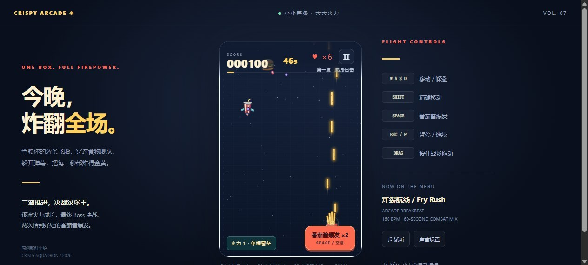
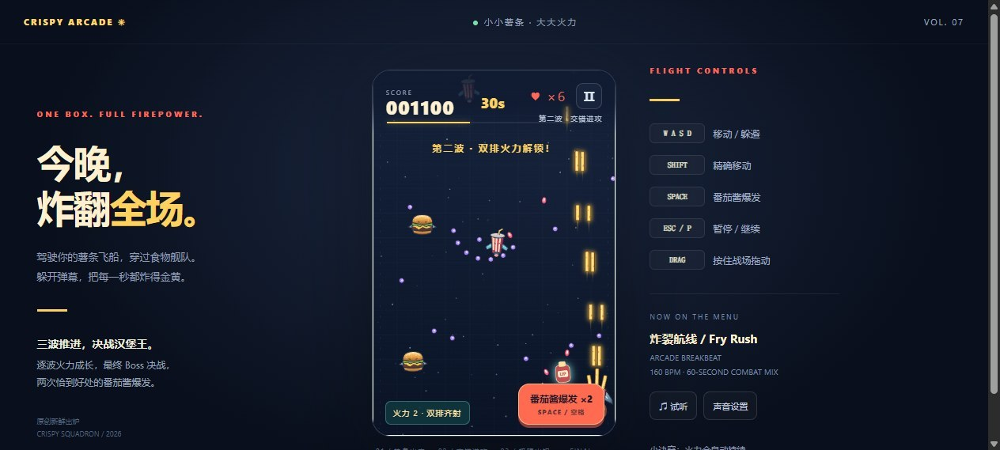
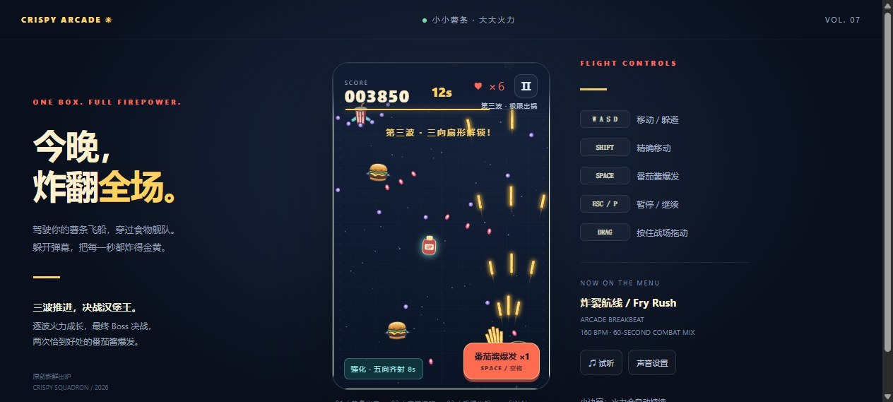
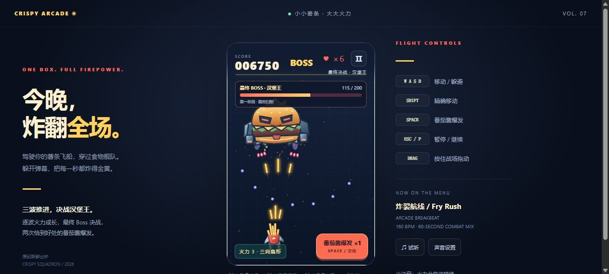
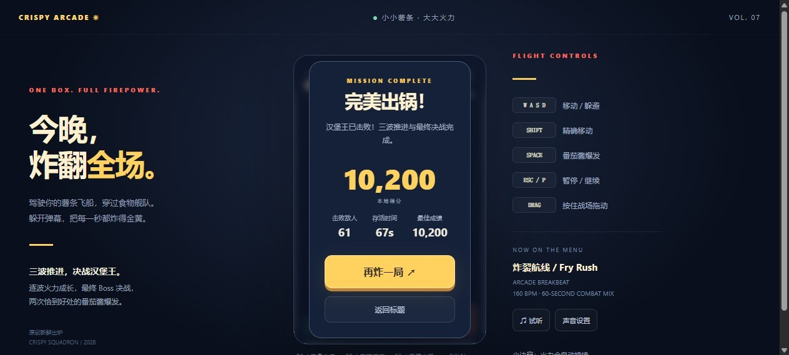

薯条出击
薯条出击 · Crispy Squadron
一盒薯条打太空 —— 48 秒三波推进后决战「汉堡王」。
🔗 访问游戏
研发商上海娱公竞宇网络有限公司（娱公互动）
关系自研自发
版本CRISPY ARCADE 系列第 7 号作品
域名 frybox.caniculab.com 挂在娱公竞宇官网 caniculab.com 之下，页面标题为「CRISPY ARCADE ✳ 小小薯条 · 大大火力 VOL. 07」。母公司与微博系关联（集团内《狼人杀》《谁是卧底》《弹唱达人》等，用户量过亿；假面科技为其投资方之一）。母体有资源 ≠ 这款产品有热度 —— 官网「产品展示」区未收录薯条，同系列子域互不导流（已枚举 45 个候选子域验证）。
8.0
★★★★★★★★
综合评分
平台
单文件网页，打开即玩，零账号零下载
热度
无榜单、无公开用户数，母体官网也未收录。
无公开榜单、无公开用户数、母体官网也未收录 —— 作为产品几乎没有外部声量
玩法
走位躲弹幕 → 自动射击清敌 → 拾取火力 → 三波推进 → 打 BOSS。一局 67 秒，全程只管走位和捡东西。
节奏精准的纵版弹幕射击：48 秒三波后决战汉堡王，但局内只有一层深度
证据锚点 5 条
- 【high】连击系统是死代码：combo 被完整维护却从未参与计分或显示，白白丢掉了「连续击杀」这个最经典的爽点 — 源码 kill() —— 连击被维护：
- 【mid】「Boss 练习」模式没有专属结算文案，通关后提示语与完整关卡几乎一样，玩家分不清自己打的是哪条线 — 源码 finish() 只有一处结果分支：
- 【mid】Boss 练习模式的进度条恒定显示 100%，因为它复用了以「关卡总时长」为分母的公式 — 源码 reset():
- 【low】HUD 分数用补零格式、结算页用千分位格式，同一个数字在两处显示成两种写法 — 源码 hud():
- 【low】Boss 练习模式不产出任何东西：没有专属分数、没有解锁、没有任何记录 — 源码 reset('boss') 后，持久化相关的逻辑只有 finish() 里的这一行：
题材
一盒薯条打太空，敌机是红白条纹饮料杯和金黄汉堡，BOSS 是戴王冠的机械汉堡。食物拟人是这套美术能成立的前提 —— 换成人形敌机，整个调性会立刻垮掉。打击台词还埋了日式梗（「ガキィン!! 山が硬い…」「地球、両断!!!!」）。
一盒薯条打太空，食物拟人是这套美术能成立的前提
美术
干净的矢量卡通，扣分在敌机与 BOSS 只有贴图、没有动作表演
商业化
无广告、无内购、无货币、无商店，运行全程 0 个网络请求。分享只生成成绩图，不兑换任何资源。
零广告零内购零货币，主动选择不做商业化 —— 作为作品成立，作为产品不成立
预览 实机录像与截图
实机截图




